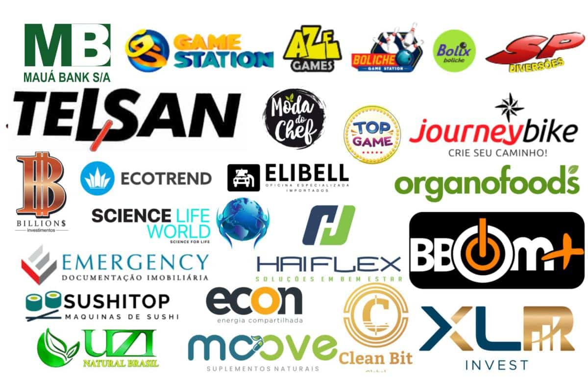

Reducao de custo
Automacao de tarefas repetitivas, menos trabalho manual e menos horas improdutivas no backoffice.
Nova perspectiva SVD 2026
Mantemos a base robusta do Sistema Venda Direta e adicionamos uma abordagem orientada por IA: automacao operacional, ganho de produtividade e evolucao continua com o time do CodaFacil.
A proposta e pragmatica: usar IA onde ela gera retorno financeiro real para a sua empresa. Foco em reduzir custo operacional, remover gargalos e aumentar previsibilidade de resultado.
Automacao de tarefas repetitivas, menos trabalho manual e menos horas improdutivas no backoffice.
Fluxos mais claros, menos retrabalho e melhor capacidade de atendimento para o mesmo time.
Padroes de entrega, revisao de processos e evolucao continua com governanca tecnica.
Plataforma principal para operacao de venda direta com implantacao padrao.
Mais recomendado
Pacote de automacao e melhoria de processo para baixar custo e aumentar performance.
Projeto sob medida com CodaFacil para novas frentes, integracoes e modulos especiais.
Trabalhamos em uma esteira clara para gerar resultado pratico e reduzir risco de retrabalho.
O Sistema Venda Direta segue como o produto principal para operacao de venda direta. O CodaFacil entra como celula de engenharia para customizacoes, integracoes e novas iniciativas com IA.
Resultado: voce tem uma base solida para operar hoje e um time tecnico para evoluir rapido sem trocar de plataforma.
Reducao de retrabalho
20% - 40%
Ganho de produtividade
15% - 35%
Tempo de resposta
Mais rapido
Previsibilidade da operacao
Mais controle
Solucao para empresas que ja operam venda direta e querem evoluir com inteligencia artificial sem quebrar a base atual.

Vamos mapear seu cenario e indicar a melhor trilha: SVD Core, IA Essentials ou IA Custom com CodaFacil.
Deixe seu telefone/WhatsApp e nosso time retorna com proposta objetiva.
Contato comercial: 11 99456-6726
Nao. A IA apoia o time, reduz tarefas repetitivas e melhora a velocidade da operacao.
Sim. O trabalho comeca preservando o que funciona e ajustando apenas os pontos com maior impacto.
Quando existe demanda de customizacao, integracao externa ou novos modulos estrategicos.
Solicitar o diagnostico IA. Com isso, definimos escopo, ganhos esperados e plano de execucao.